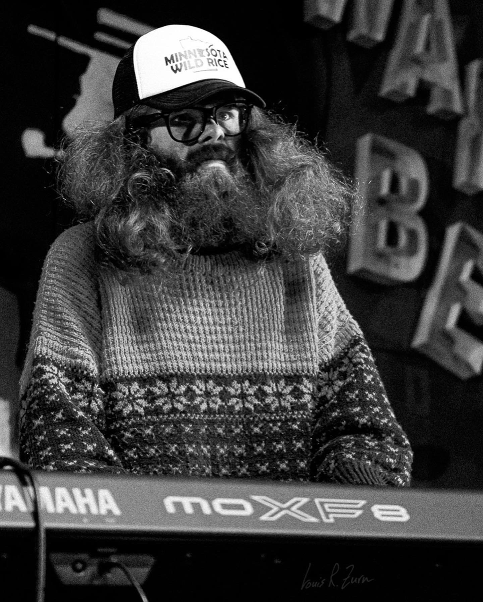
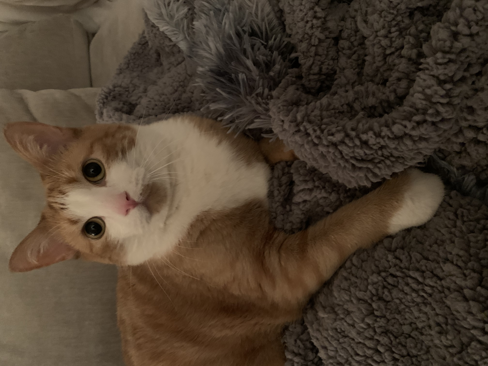

Sam Nickson
I first and foremost am a passionate cat dad to my pride and joy, Lester, who is depicted beautifully on the right. I went to Berklee College of Music and quickly learned that I was a horrible jazz musician. I ended up leaving and running a production company called Hexproof Productions. I have done various projects ranging from managing teams of people to making records in a garage. I like projects and ideas that have meaning and a plucky spirit.
I am currently learning full stack development and am quickly attaining experience in that area. I hope to enter this field with gusto using the skills I have aquired through running a business and the technical skills I am currently learning.
